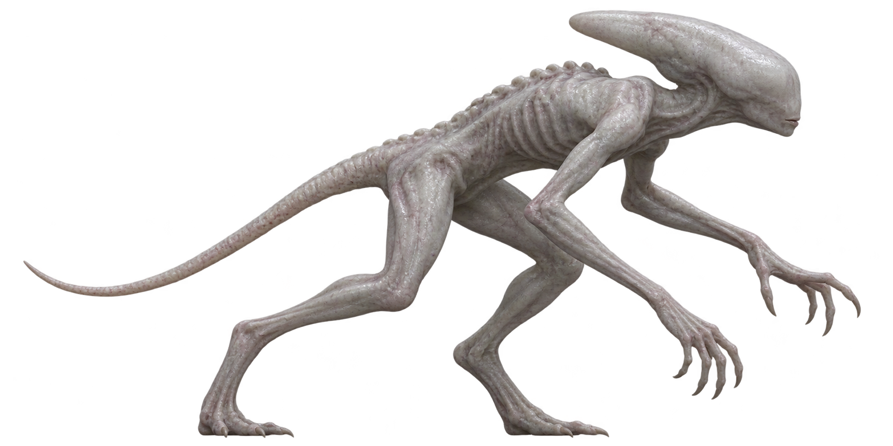
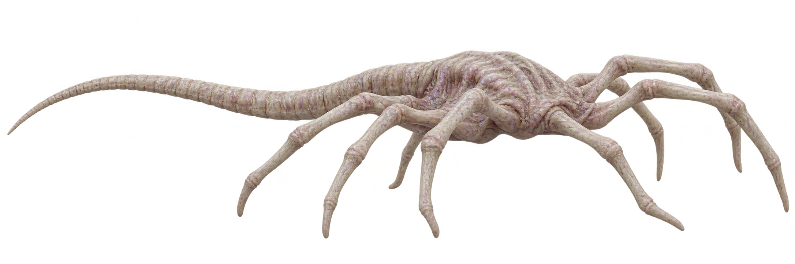
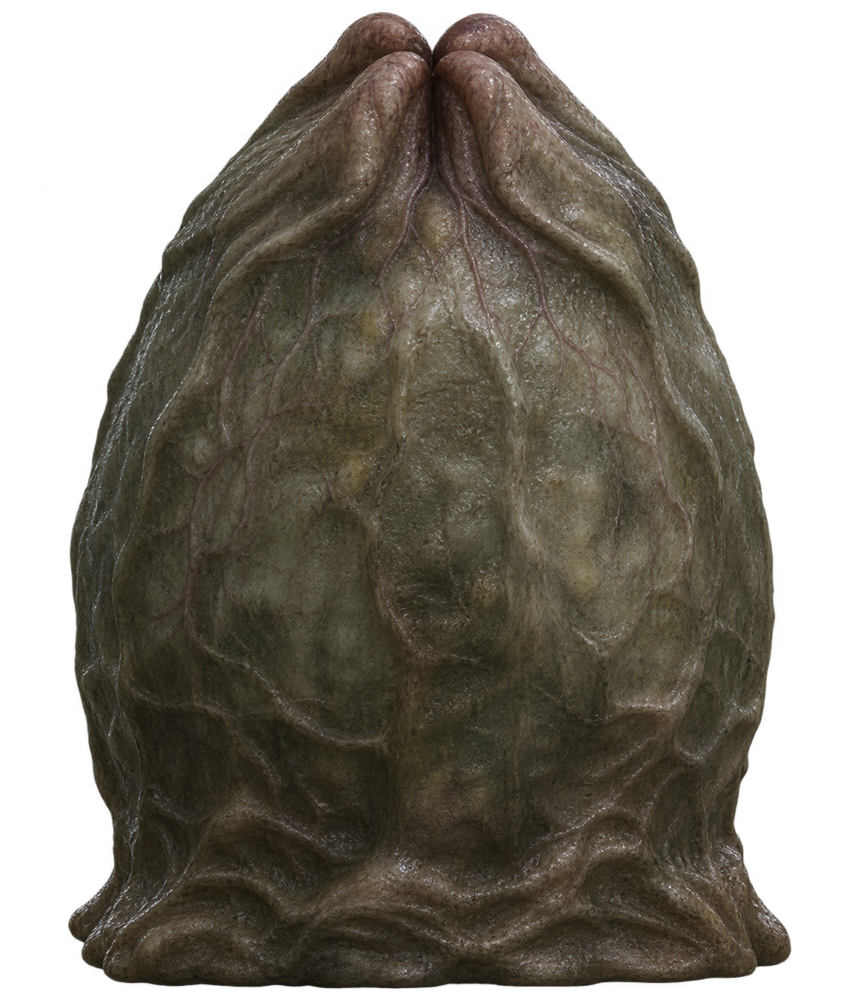

Néomorphe adulte — citadelle
1774 × 887 pixels · PNG source
Ouvrir l'image originale

Facehugger — Covenant
2172 × 724 pixels · PNG source
Ouvrir l'image originale

Ovomorphe — Covenant
1166 × 1349 pixels · PNG source
Ouvrir l'image originaleDeux images restent manquantes
Le Néomorphe juvénile de Hallett et la pose d'attente du Xénomorphe Covenant n'ont pas été produits : les tentatives de génération ont été refusées et aucun fichier n'a été créé.